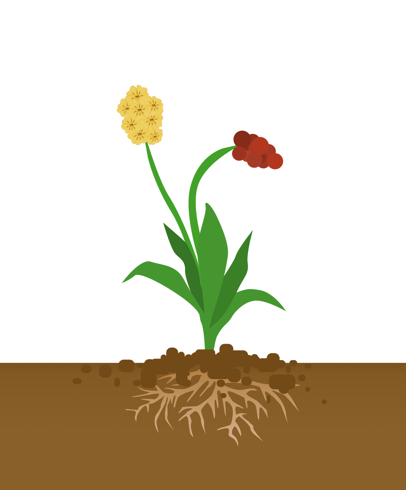

<ion-app class="container">
  
  <div class="sky"></div>
  <div class="sky-gradient sky-gradient-12"></div>
  
  <h2 class="titleLastMeasurement">Ultima lectura</h2>
  <h2 class="lastMeasurement">Hoy {{lastMeasurement}}</h2>
  <h2 class="brightness">Humedad ambiente {{brightness}} lux</h2>
  <h2 class="tempearture">Temperatura {{tempearture}}°</h2>
  <h2 class="humidity">Humedad {{humidity}} %</h2>
  <div class="heart"></div>
</ion-app>
